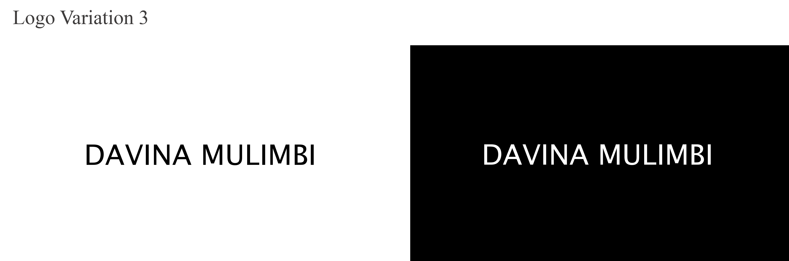
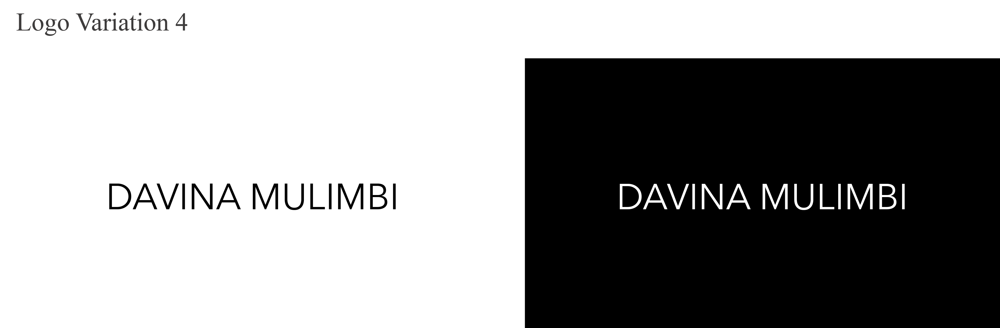
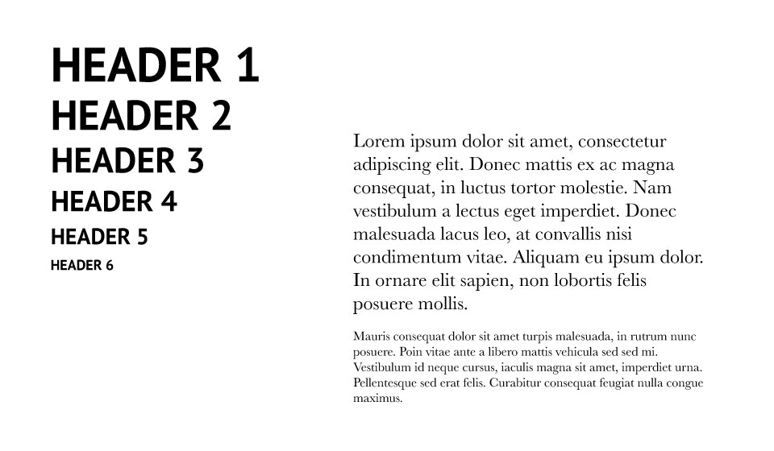
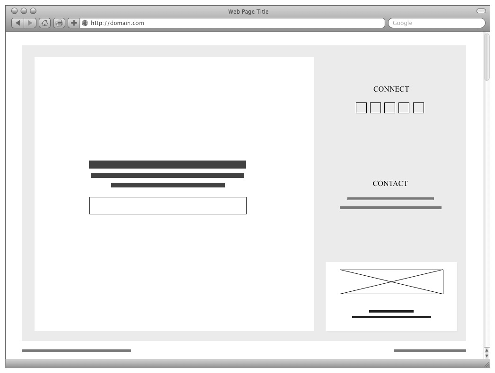
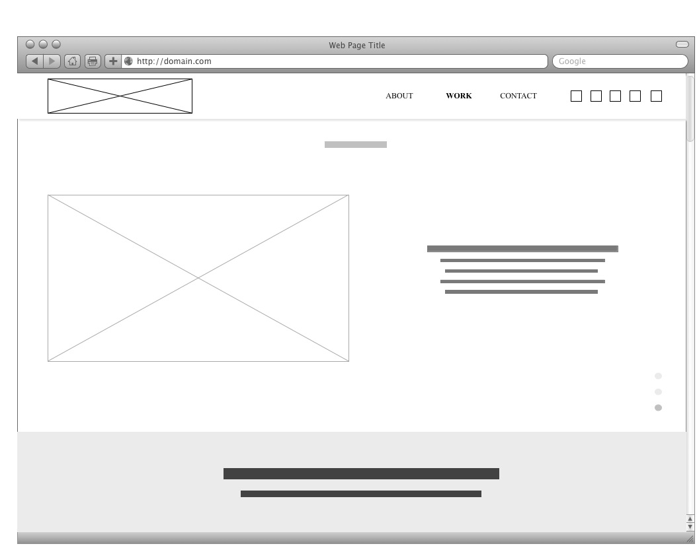
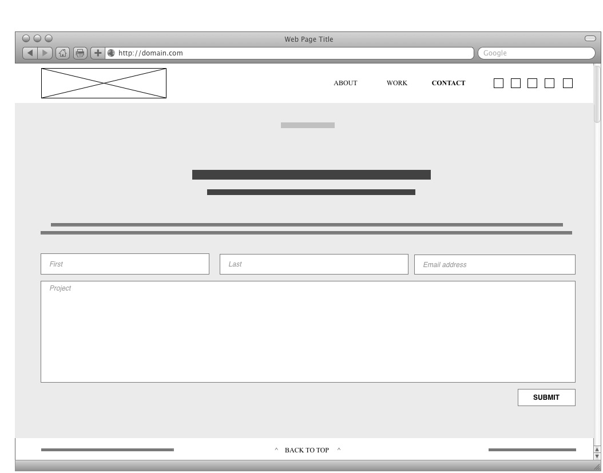

Step 1: Define your Audience / Tone
Who will visit your site? Potential employers? New Clients or customers?
Previous employers, clients, colleagues, educational institutions, etc who may look for my latest projects/work status/etc.
Prospective clients (who may look for someone/company to build their site), potential employers/partners, industry professionals (graphic designers, marketing consultants, creative directors, developers, etc), who may have found me via social media and other sites.
What can make you and/or your product stand out against your competitors?
My background/story/journey, projects, clients.
How would you speak to your clientele if you were communicating in person? How could you translate that style and tone digitally?
My style and tone will be professional, semi-formal, yet casual (adapting to the client).
Examples of how I could translate that digitally: from providing a clean and minimalist style, organized information, easy navigation, and contact form to directly speaking to the users in the 1st person.
What colors represent you or your product?
Monochromatic palette of black, dark grey, light grey, and white, which fits with most industries/projects and is quite clean.
Dark blue, gold, and light brown, for a more personal touch.
Accent color: yellow-orange, red.
The palette below represents color's ideas, but not necessarily the right shade...
What images illustrate your message?
Images of my projects.
Word mark logo (see "Step 3: Create a logo").
If possible, a profile image illustrating that professional/semi-formal/casual style.
Step 2: Identity Content
What are the three-to-five pages titled?
Site 1: Landing page (above the fold only)
Site 2: Cover page, About, Services, Work, Contact (single page layout)
What will be the purpose for each? What should each page contain? Will there be textual content? Or just images?
Site 1: Landing page
To regroup all my projects together and provide links to their respective sites
- Header
Nav (page logo - project links/logos)
- Body
Background color or background image
Short bio
Newsletter subscription
Contact information (email)
Social media (icons)
- Footer
Copyright
Site by
Site 2: Single page layout
To introduce myself as I'm learning front-end web development
Cover page (above the fold)
- Header
Fixed nav (page logo - About | Services | Work | Contact | Have a digital project?)
- Body
Tease images of latest work
- Title
Brief description
Body (scroll)
- About page
Fixed nav (page logo - About | Services | Work | Contact | Have a digital project?)
Heading
Paragraph (+ image)
- Services page
Fixed nav (page logo - About | Services | Work | Contact | Have a digital project?)
Heading
Paragraph
- Work page
Fixed nav (page logo - About | Services | Work | Contact | Have a digital project?)
Heading
Images / paragraphs
- Contact page
Fixed nav (page logo - About | Services | Work | Contact | Have a digital project?)
Heading
Paragraph
Contact form
Footer
- Copyright
All rights reserved
- Site by
Company name
Step 3: Create a Logo
- 
- 
Step 4: Create a Style Guide
Step 5: Create / Update Sketches
- 
- 

- 